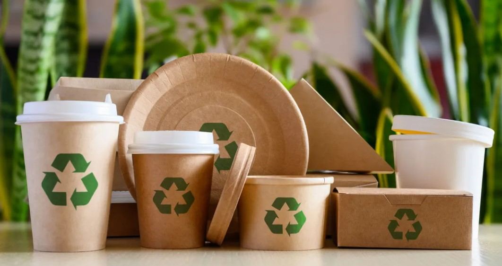

O bioplástico é um tipo de plástico produzido a partir de fontes biológicas renováveis, como amido de milho, cana-de-açúcar e óleos vegetais. Ele se diferencia dos plásticos tradicionais por ser mais sustentável.
Além de ser feito de materiais naturais, muitos bioplásticos são biodegradáveis, o que significa que podem se decompor no ambiente sem causar danos a longo prazo. Isso os torna uma alternativa ecológica ao plástico convencional.
Os bioplásticos vêm em várias formas e são usados em diversas indústrias, desde embalagens até produtos descartáveis, contribuindo para a redução da dependência de combustíveis fósseis.
Os bioplásticos são produzidos globalmente, com grandes centros de produção na Europa, América do Norte e Ásia. Países como Alemanha, Estados Unidos e China lideram na produção e desenvolvimento de bioplásticos.
As matérias-primas para bioplásticos, como milho e cana-de-açúcar, são cultivadas em várias regiões agrícolas ao redor do mundo. Isso facilita a produção sustentável e a distribuição global desses materiais.
No Brasil, a cana-de-açúcar é uma importante fonte de bioplástico, aproveitando a vasta produção agrícola do país para criar alternativas ecológicas aos plásticos tradicionais.